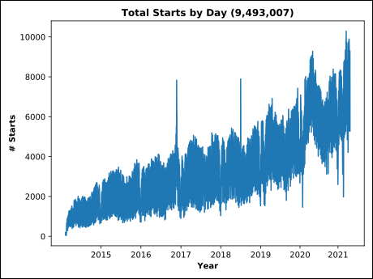
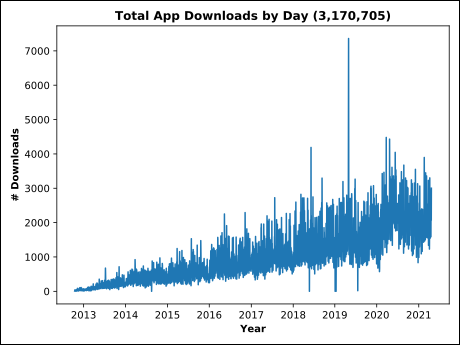

According to Pubmed Cytoscape was cited 218 times a month in 2020.
Citation counts for 2021 are not complete.
The top journals for Cytoscape citations over all time have been PLoS One and Sci represents.


As of 5/5/2021 are 367 Active Apps in the Appstore. Not sure what happened, but there were over 7,000 AppStore App downloads on 04/30/2019 and 05/01/2019.

Cytoscape downloads by platform
Binary downloads (.gz ending) are Linux downloads and .zip downloads are assumed to be Windows.
Note: Only downloads since 10/17/2018 for Cytoscape versions 3.7.0 and above are rendered in the plot below.